Multi dataset cosine clustering
Usage
cf_cosine_plot(
ids = NULL,
...,
threshold = 5,
partners = c("outputs", "inputs"),
labRow = "{type}_{coconatfly::abbreviate_datasets(dataset)}{side}",
group = "type",
heatmap = TRUE,
matrix = FALSE,
interactive = FALSE,
drop_dataset_prefix = FALSE,
keep.all.meta = TRUE,
min_datasets = Inf,
nas = c("zero", "drop"),
method = c("ward.D", "single", "complete", "average", "mcquitty", "median", "centroid",
"ward.D2")
)
multi_connection_table(
ids,
partners = c("inputs", "outputs"),
threshold = 1L,
group = "type",
check_missing = TRUE,
min_datasets = Inf
)Arguments
- ids
A set of across dataset
keysor neuron ids wrapped bycf_idsor a dataframe compatible with thekeysfunction.- ...
Additional arguments passed to
heatmap- threshold
return only edges with at least this many matches. 0 is an option since neuprint sometimes returns 0 weight edges.
- partners
Whether to return inputs or outputs
- labRow
Optionally, either string that can be interpolated by
glueor a character vector matching the number of neurons specified byids. See details for an important limitation in the second case.- group
The name or the grouping column for partner connectivity (defaults to
"type") or a logical wheregroup=FALSEmeans no grouping (see details).- heatmap
A logical indicating whether or not to plot the heatmap OR a function to plot the heatmap whose argument names are compatible with
stats::heatmap.gplots::heatmap.2is a good example. Defaults toTRUEtherefore plotting the full heatmap withstats::heatmap.- matrix
Whether to return the raw cosine matrix (rather than a heatmap/dendrogram)
- interactive
Whether to plot an interactive heatmap (allowing zooming and id selection). See details.
- drop_dataset_prefix
Whether to remove dataset prefix such as
hb:orfw:from dendrograms. This is useful when reviewing neurons in interactive mode.- keep.all.meta
Whether to keep all meta data information for the query neurons to allow for more flexible labelling of the dendrogram (default
TRUEfor convenience, so not really clear why you would want to set toFALSE). See thekeep.allargument ofcf_metafor details.- min_datasets
How many datasets a type must be in to be included in the output. The default of
Inf=> all datasets must contain the cell type. A negative number defines the number of datasets from which a type can be missing. For example-1would mean that types would still be included even if they are missing from one dataset.- nas
What to do with entries that have NAs. Default is to set them to 0 similarity.
- method
The cluster method to use (see
hclust)- check_missing
Whether to report if any query neurons are dropped (due to insufficient partner neurons) (default:
TRUE).
Value
The result of heatmap invisibly including the row and
column dendrograms or when heatmap=FALSE, an
hclust dendrogram or when maxtrix=TRUE a cosine
matrix.
multi_connection_table returns a connectivity dataframe as
returned by cf_partners but with an additional column
partners which indicates (for each row) whether the partner neurons
are the input or output neurons.
Details
group=FALSE only makes sense for single dataset clustering -
type labels are essential for linking connectivity across datasets. However
group=FALSE can be useful e.g. for co-clustering columnar elements
in the visual system that have closely related partners usually because
they are in neighbouring columns. At the time of writing, there is no
metadata support in FANC so group=FALSE is the only option there.
group can be set to other metadata columns such as class or
hemilineage, serial (serially homologous cell group) if
available. This can reveal other interesting features of organisation.
The labRow argument is most conveniently specified as a length 1
string to be interpolated by glue; this will happen in the
context of a data frame generated by cf_meta. One reason why
this is convenient is that you do not have to think about matching up the
labels to the order of neurons in the dendrogram
However, if you need to use additional information for your labels not
present in the cf_meta data then you will need to generate
your own labRow vector. The recommended way to do this is to use
cf_meta to fetch the metadata for your neurons and then to
construct an additional column with your preferred label. This ensures that
each entry in the labRow argument can be matched to a specific
neuron (defined by the key column of the metadata data frame).
Note that if you try to pass a user defined labRow character vector
without supplying an explicitly ordered set of neurons to the ids
argument then you will get an error. This is because cf_cosine_plot
has no way of knowing which label corresponds to which neuron, almost
certainly resulting in incorrect row labels on your dendrogram.
Examples
# \donttest{
# basic cosine clustering, in this case for one dataset
cf_cosine_plot(cf_ids(hemibrain="/type:LAL00.+"))
 # same but dropping the dataset prefix in the column labels
cf_cosine_plot(cf_ids(hemibrain="/type:LAL00.+"),
drop_dataset_prefix = TRUE)
# same but dropping the dataset prefix in the column labels
cf_cosine_plot(cf_ids(hemibrain="/type:LAL00.+"),
drop_dataset_prefix = TRUE)
 # only cluster by inputs
cf_cosine_plot(cf_ids(hemibrain="/type:LAL00.+"), partners='in')
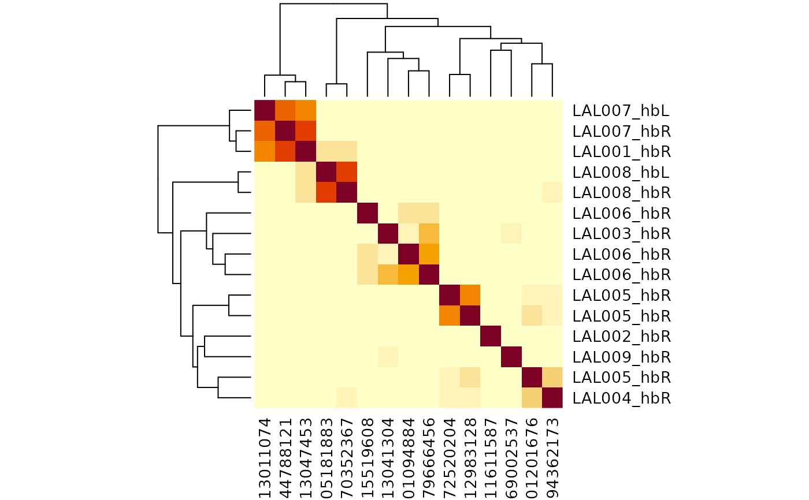
# or outputs
cf_cosine_plot(cf_ids(hemibrain="/type:LAL00.+"), partners='in')
# the same but without grouping partner connectivity by type
# only makes sense for single dataset plots
cf_cosine_plot(cf_ids(hemibrain="/type:LAL00.+"), group = FALSE)
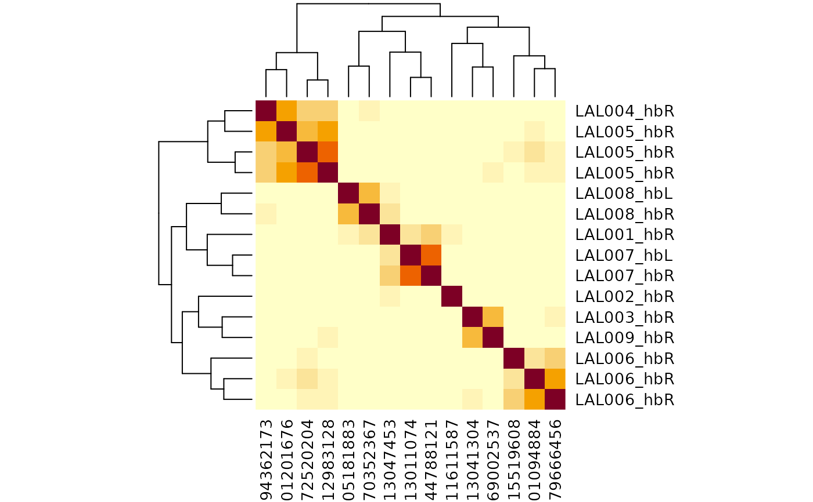
## Using user supplied row labels
# e.g. because you have some labels of your own that you want to add
library(dplyr)
#>
#> Attaching package: ‘dplyr’
#> The following objects are masked from ‘package:nat’:
#>
#> intersect, setdiff, union
#> The following objects are masked from ‘package:stats’:
#>
#> filter, lag
#> The following objects are masked from ‘package:base’:
#>
#> intersect, setdiff, setequal, union
library(glue)
lalmeta=cf_meta(cf_ids(hemibrain="/type:LAL00.+"))
# NB left_join requires the id columns to have the same character data type
mytypes=data.frame(
id=as.character(c(5813047453, 1011611587)),
mytype=c("alice", 'bob'))
# NB glue::glue functions makes the label using column names
lalmeta2=left_join(lalmeta, mytypes, by='id') %>%
mutate(label=glue('{type}_{side} :: {mytype}'))
head(lalmeta2)
#> id pre post upstream downstream status statusLabel voxels
#> 1 5813047453 943 2867 2867 7967 Traced Roughly traced 1709019324
#> 2 1011611587 876 2392 2392 8542 Traced Roughly traced 1502700413
#> 3 5813041304 288 905 905 2089 Traced Roughly traced 695312778
#> 4 894362173 208 469 469 1703 Traced Roughly traced 469303915
#> 5 1572520204 126 474 474 863 Traced Roughly traced 402431356
#> 6 5901201676 120 383 383 832 Traced Roughly traced 360821541
#> cropped instance type lineage notes soma side class subclass subsubclass
#> 1 FALSE LAL001_R LAL001 ADL02 <NA> TRUE R <NA> <NA> <NA>
#> 2 FALSE LAL002_R LAL002 ADL02 <NA> TRUE R <NA> <NA> <NA>
#> 3 FALSE LAL003_R LAL003 ADL06 <NA> TRUE R <NA> <NA> <NA>
#> 4 FALSE LAL004_R LAL004 ADL06 <NA> TRUE R <NA> <NA> <NA>
#> 5 FALSE LAL005_R LAL005 ADL06 <NA> TRUE R <NA> <NA> <NA>
#> 6 FALSE LAL005_R LAL005 ADL06 <NA> TRUE R <NA> <NA> <NA>
#> group dataset key mytype label
#> 1 <NA> hemibrain hb:5813047453 alice LAL001_R :: alice
#> 2 <NA> hemibrain hb:1011611587 bob LAL002_R :: bob
#> 3 <NA> hemibrain hb:5813041304 <NA> LAL003_R :: NA
#> 4 <NA> hemibrain hb:894362173 <NA> LAL004_R :: NA
#> 5 <NA> hemibrain hb:1572520204 <NA> LAL005_R :: NA
#> 6 <NA> hemibrain hb:5901201676 <NA> LAL005_R :: NA
# now use that in the plot
# NB with function allows cf_cosine_plot to use dataframe columns directly
lalmeta2 %>%
with(cf_cosine_plot(key, labRow=label))
# bigger clustering
lalhc=cf_cosine_plot(cf_ids(hemibrain="/type:LAL.+"), heatmap=FALSE)
#> Warning: diag(V) has non-positive or non-finite entries; finite result is doubtful
lalmeta=cf_meta(lalhc)
lalmeta=coconat::add_cluster_info(lalmeta, lalhc, h=0.75, idcol='key')
# }
if (FALSE) { # \dontrun{
## The previous examples are for single datasets to avoid authentication issues
## on the build server, but similar queries could be run for multiple datasets
cf_cosine_plot(cf_ids(flywire="/type:LAL.+", malecns="/type:LAL.+"))
# we can use a range of dataset-specific columns to decorate labels
cf_cosine_plot(cf_ids(flywire="/type:LAL0.+", hemibrain="/type:LAL0.+"),
labRow = "{top_nt}")
cf_cosine_plot(cf_ids("/type:LAL.+", datasets='brain'))
# same as since the default is brain
cf_cosine_plot(cf_ids("/type:LAL.+"))
# just make the hclust dendrogram
lalhc=cf_cosine_plot(cf_ids("/type:LAL.+"), heatmap=FALSE)
lalmeta=cf_meta(lalhc)
lalmeta=coconat::add_cluster_info(lalmeta, lalhc, h=0.75)
# plot results in a big dendrogram
pdf("lalhc.pdf", width = 150,height = 20, family = 'Courier')
plot(lalhc, labels=glue::glue_data("{type}_{abbreviate_datasets(dataset)}{side}",
.x=lalmeta), hang = -.01, cex=.7)
dev.off()
# look at the results interactively
cf_cosine_plot(cf_ids("/type:LAL.+"), interactive=TRUE)
} # }
# \donttest{
# Showcase examples using multi_connection_table to allow
# only a subset of partners to be used for typing
mct=multi_connection_table(cf_ids(hemibrain="/lLN2.+"), partners='in')
cf_cosine_plot(mct)
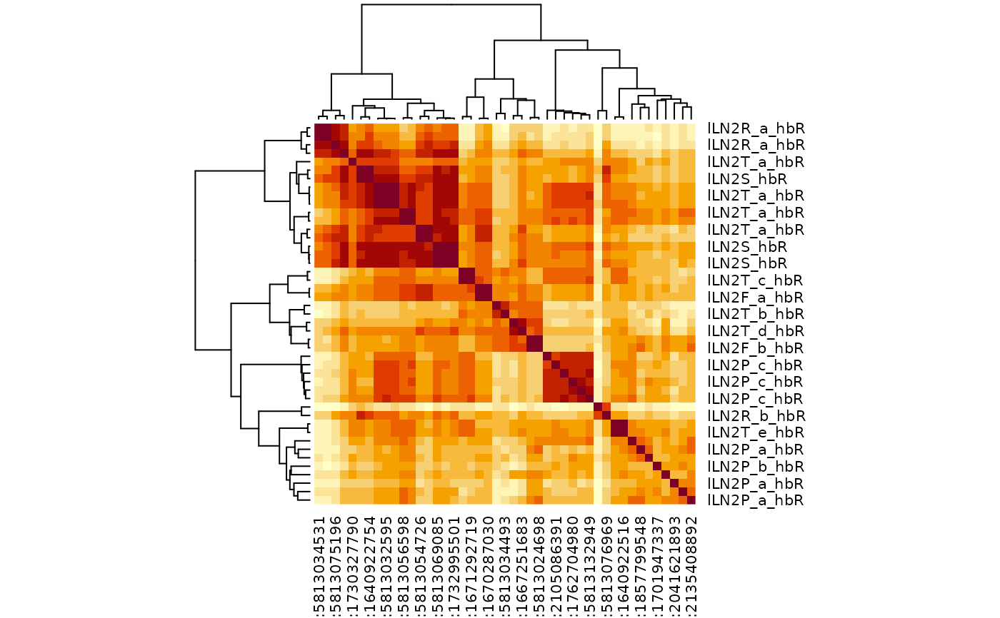
library(dplyr)
mct2=mct %>% filter(!grepl("PN",type))
cf_cosine_plot(mct2)
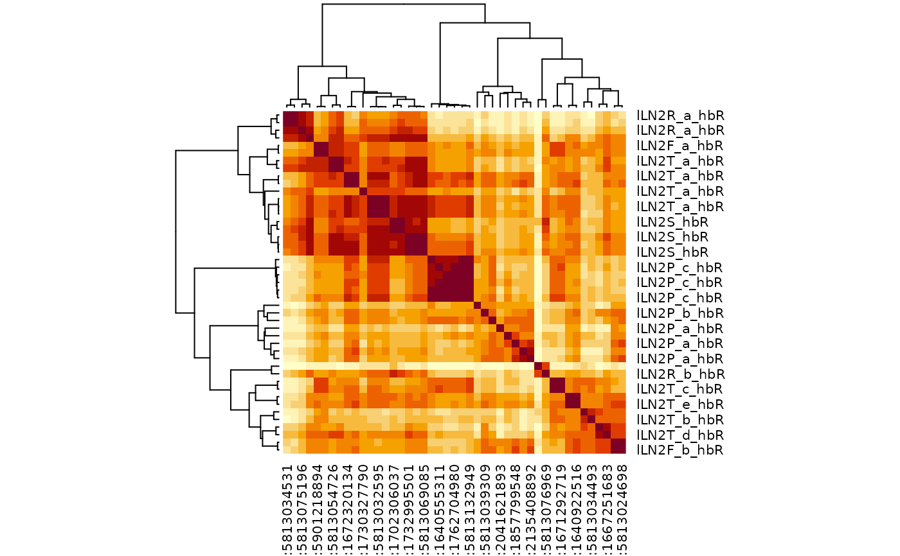
mct3=cf_ids("/type:lLN2.+", datasets=c("hemibrain", "flywire")) %>%
multi_connection_table(., partners='in') %>%
mutate(class=case_when(
grepl("LN", type) ~ "LN",
grepl("RN", type) ~ "RN",
grepl("^M.*PN", type) ~ 'mPN',
grepl("PN", type) ~ 'uPN',
TRUE ~ 'other'
)) %>%
# try merging connectivity for partners that don't have much specificity
mutate(type=case_when(
class=="RN" ~ sub("_.+", "", type),
class=="uPN" ~ 'uPN',
TRUE ~ type
))
#> Loading required namespace: git2r
#> Matching types across datasets. Keeping 109545/137338 input connections with total weight 630855/868364 (73%)
if (FALSE) { # \dontrun{
mct3%>%
# remove RN/uPN connectivity could also use the merged connectivity
filter(!class %in% c("RN", "uPN")) %>%
cf_cosine_plot(interactive=TRUE)
} # }
# This time focus in on a small number of query neurons
mct3 %>%
mutate(query_key=ifelse(partners=='outputs', pre_key, post_key)) %>%
filter(query_key %in% cf_ids('/type:lLN2(T_[bde]|X08)',
datasets = c("hemibrain", "flywire"), keys = TRUE)) %>%
cf_cosine_plot()
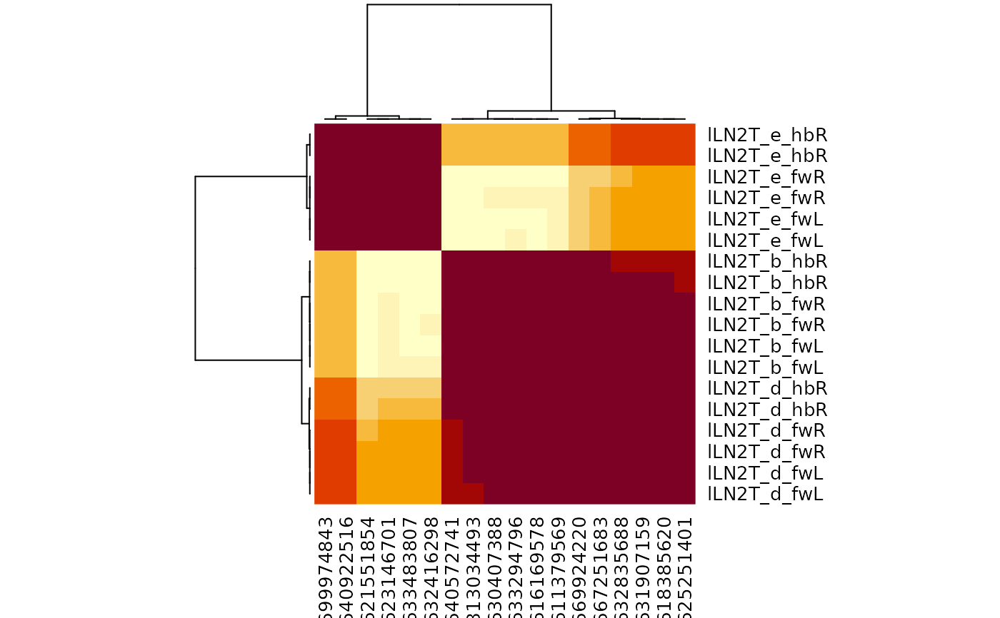
# }
# another worked example lLN1 neurons
# \donttest{
lLN1=cf_ids("/type:lLN1_.+", datasets=c("hemibrain", "flywire")) %>%
multi_connection_table(., partners='in') %>%
mutate(class=case_when(
grepl("LN", type) ~ "LN",
grepl("RN", type) ~ "RN",
grepl("^M.*PN", type) ~ 'mPN',
grepl("PN", type) ~ 'uPN',
TRUE ~ 'other'
)) %>%
mutate(type=case_when(
class=="RN" ~ sub("_.+", "", type),
class=="uPN" ~ 'uPN',
TRUE ~ type
))
#> Matching types across datasets. Keeping 12845/20029 input connections with total weight 113028/237205 (48%)
lLN1 %>%
filter(!class %in% c("RN", "uPN")) %>%
cf_cosine_plot()
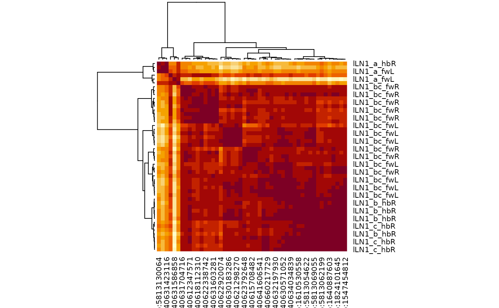
# }
# only cluster by inputs
cf_cosine_plot(cf_ids(hemibrain="/type:LAL00.+"), partners='in')
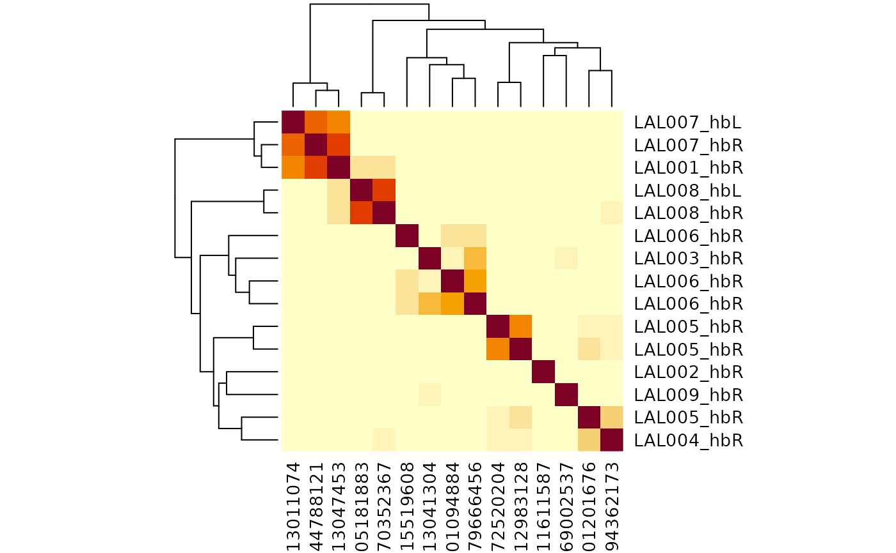
# or outputs
cf_cosine_plot(cf_ids(hemibrain="/type:LAL00.+"), partners='in')
# the same but without grouping partner connectivity by type
# only makes sense for single dataset plots
cf_cosine_plot(cf_ids(hemibrain="/type:LAL00.+"), group = FALSE)
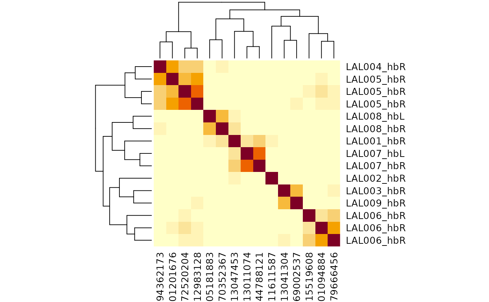
## Using user supplied row labels
# e.g. because you have some labels of your own that you want to add
library(dplyr)
#>
#> Attaching package: ‘dplyr’
#> The following objects are masked from ‘package:nat’:
#>
#> intersect, setdiff, union
#> The following objects are masked from ‘package:stats’:
#>
#> filter, lag
#> The following objects are masked from ‘package:base’:
#>
#> intersect, setdiff, setequal, union
library(glue)
lalmeta=cf_meta(cf_ids(hemibrain="/type:LAL00.+"))
# NB left_join requires the id columns to have the same character data type
mytypes=data.frame(
id=as.character(c(5813047453, 1011611587)),
mytype=c("alice", 'bob'))
# NB glue::glue functions makes the label using column names
lalmeta2=left_join(lalmeta, mytypes, by='id') %>%
mutate(label=glue('{type}_{side} :: {mytype}'))
head(lalmeta2)
#> id pre post upstream downstream status statusLabel voxels
#> 1 5813047453 943 2867 2867 7967 Traced Roughly traced 1709019324
#> 2 1011611587 876 2392 2392 8542 Traced Roughly traced 1502700413
#> 3 5813041304 288 905 905 2089 Traced Roughly traced 695312778
#> 4 894362173 208 469 469 1703 Traced Roughly traced 469303915
#> 5 1572520204 126 474 474 863 Traced Roughly traced 402431356
#> 6 5901201676 120 383 383 832 Traced Roughly traced 360821541
#> cropped instance type lineage notes soma side class subclass subsubclass
#> 1 FALSE LAL001_R LAL001 ADL02 <NA> TRUE R <NA> <NA> <NA>
#> 2 FALSE LAL002_R LAL002 ADL02 <NA> TRUE R <NA> <NA> <NA>
#> 3 FALSE LAL003_R LAL003 ADL06 <NA> TRUE R <NA> <NA> <NA>
#> 4 FALSE LAL004_R LAL004 ADL06 <NA> TRUE R <NA> <NA> <NA>
#> 5 FALSE LAL005_R LAL005 ADL06 <NA> TRUE R <NA> <NA> <NA>
#> 6 FALSE LAL005_R LAL005 ADL06 <NA> TRUE R <NA> <NA> <NA>
#> group dataset key mytype label
#> 1 <NA> hemibrain hb:5813047453 alice LAL001_R :: alice
#> 2 <NA> hemibrain hb:1011611587 bob LAL002_R :: bob
#> 3 <NA> hemibrain hb:5813041304 <NA> LAL003_R :: NA
#> 4 <NA> hemibrain hb:894362173 <NA> LAL004_R :: NA
#> 5 <NA> hemibrain hb:1572520204 <NA> LAL005_R :: NA
#> 6 <NA> hemibrain hb:5901201676 <NA> LAL005_R :: NA
# now use that in the plot
# NB with function allows cf_cosine_plot to use dataframe columns directly
lalmeta2 %>%
with(cf_cosine_plot(key, labRow=label))
# bigger clustering
lalhc=cf_cosine_plot(cf_ids(hemibrain="/type:LAL.+"), heatmap=FALSE)
#> Warning: diag(V) has non-positive or non-finite entries; finite result is doubtful
lalmeta=cf_meta(lalhc)
lalmeta=coconat::add_cluster_info(lalmeta, lalhc, h=0.75, idcol='key')
# }
if (FALSE) { # \dontrun{
## The previous examples are for single datasets to avoid authentication issues
## on the build server, but similar queries could be run for multiple datasets
cf_cosine_plot(cf_ids(flywire="/type:LAL.+", malecns="/type:LAL.+"))
# we can use a range of dataset-specific columns to decorate labels
cf_cosine_plot(cf_ids(flywire="/type:LAL0.+", hemibrain="/type:LAL0.+"),
labRow = "{top_nt}")
cf_cosine_plot(cf_ids("/type:LAL.+", datasets='brain'))
# same as since the default is brain
cf_cosine_plot(cf_ids("/type:LAL.+"))
# just make the hclust dendrogram
lalhc=cf_cosine_plot(cf_ids("/type:LAL.+"), heatmap=FALSE)
lalmeta=cf_meta(lalhc)
lalmeta=coconat::add_cluster_info(lalmeta, lalhc, h=0.75)
# plot results in a big dendrogram
pdf("lalhc.pdf", width = 150,height = 20, family = 'Courier')
plot(lalhc, labels=glue::glue_data("{type}_{abbreviate_datasets(dataset)}{side}",
.x=lalmeta), hang = -.01, cex=.7)
dev.off()
# look at the results interactively
cf_cosine_plot(cf_ids("/type:LAL.+"), interactive=TRUE)
} # }
# \donttest{
# Showcase examples using multi_connection_table to allow
# only a subset of partners to be used for typing
mct=multi_connection_table(cf_ids(hemibrain="/lLN2.+"), partners='in')
cf_cosine_plot(mct)
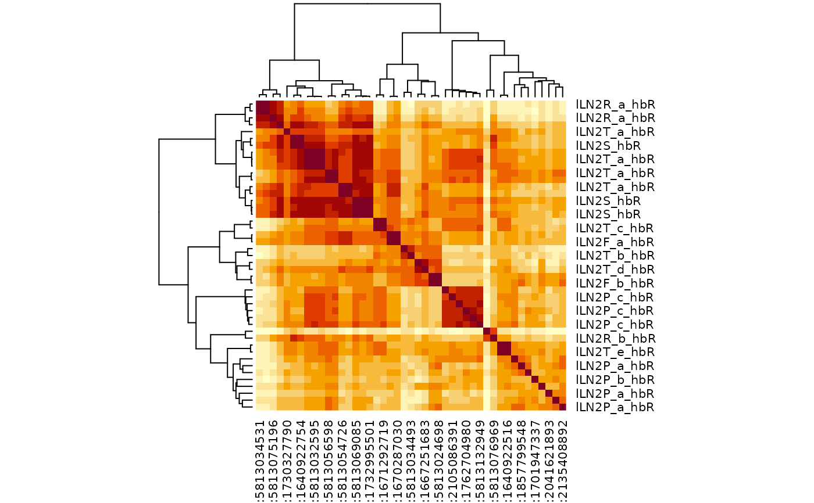
library(dplyr)
mct2=mct %>% filter(!grepl("PN",type))
cf_cosine_plot(mct2)
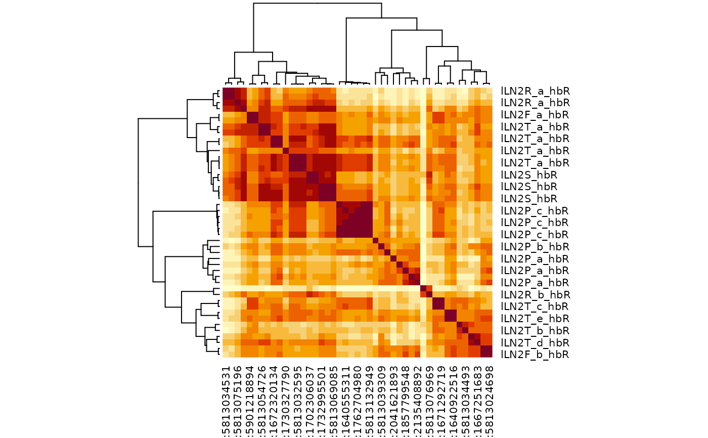
mct3=cf_ids("/type:lLN2.+", datasets=c("hemibrain", "flywire")) %>%
multi_connection_table(., partners='in') %>%
mutate(class=case_when(
grepl("LN", type) ~ "LN",
grepl("RN", type) ~ "RN",
grepl("^M.*PN", type) ~ 'mPN',
grepl("PN", type) ~ 'uPN',
TRUE ~ 'other'
)) %>%
# try merging connectivity for partners that don't have much specificity
mutate(type=case_when(
class=="RN" ~ sub("_.+", "", type),
class=="uPN" ~ 'uPN',
TRUE ~ type
))
#> Loading required namespace: git2r
#> Matching types across datasets. Keeping 109545/137338 input connections with total weight 630855/868364 (73%)
if (FALSE) { # \dontrun{
mct3%>%
# remove RN/uPN connectivity could also use the merged connectivity
filter(!class %in% c("RN", "uPN")) %>%
cf_cosine_plot(interactive=TRUE)
} # }
# This time focus in on a small number of query neurons
mct3 %>%
mutate(query_key=ifelse(partners=='outputs', pre_key, post_key)) %>%
filter(query_key %in% cf_ids('/type:lLN2(T_[bde]|X08)',
datasets = c("hemibrain", "flywire"), keys = TRUE)) %>%
cf_cosine_plot()
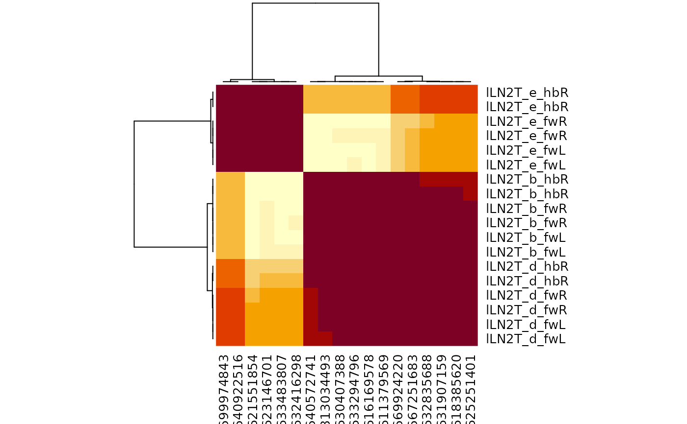
# }
# another worked example lLN1 neurons
# \donttest{
lLN1=cf_ids("/type:lLN1_.+", datasets=c("hemibrain", "flywire")) %>%
multi_connection_table(., partners='in') %>%
mutate(class=case_when(
grepl("LN", type) ~ "LN",
grepl("RN", type) ~ "RN",
grepl("^M.*PN", type) ~ 'mPN',
grepl("PN", type) ~ 'uPN',
TRUE ~ 'other'
)) %>%
mutate(type=case_when(
class=="RN" ~ sub("_.+", "", type),
class=="uPN" ~ 'uPN',
TRUE ~ type
))
#> Matching types across datasets. Keeping 12845/20029 input connections with total weight 113028/237205 (48%)
lLN1 %>%
filter(!class %in% c("RN", "uPN")) %>%
cf_cosine_plot()
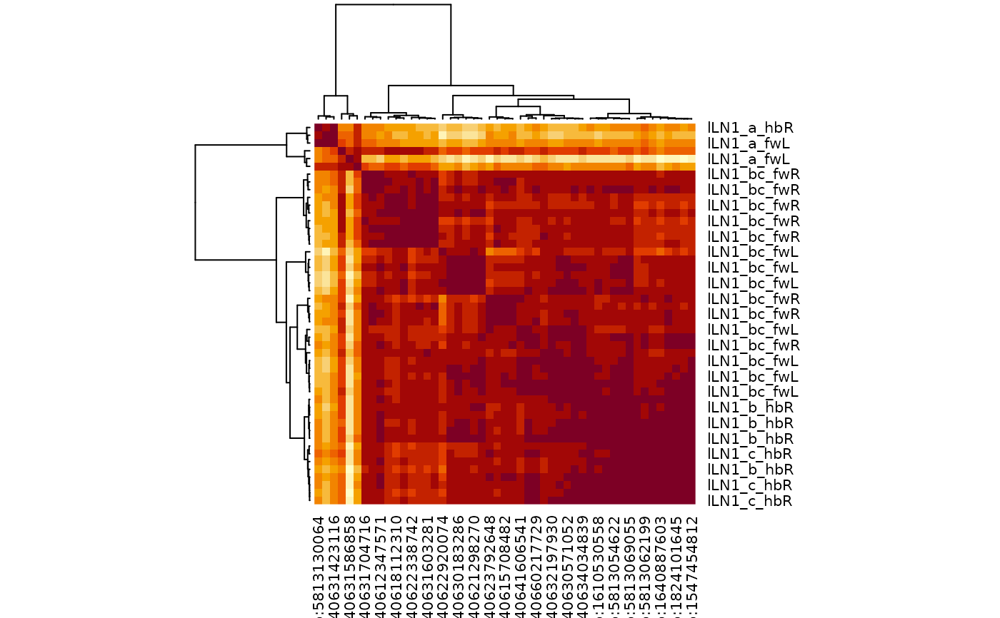
# }